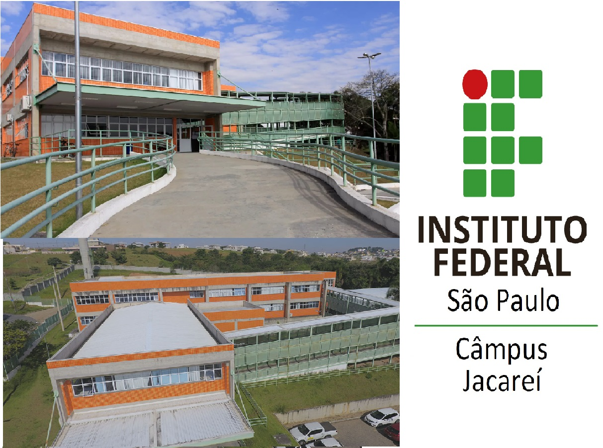

Pesquisa científica e recursos educacionais para estudantes com TEA
Explore nossos projetos, publicações e iniciativas que inspiram novas formas de pensar e viver a educação inclusiva.
Conheça nossa trajetória e faça parte dessa mudança!
Grupo interdisciplinar dedicado à pesquisa, extensão e formação voltada à neurodiversidade e inclusão escolar.
Atividades, eventos e materiais que promovem práticas acessíveis e colaborativas para todos os estudantes.

Campus Jacareí — parceiro institucional da Equipe MIND, apoiando ações inclusivas e educacionais.
Materiais e estratégias pedagógicas inclusivas
Recursos inclusivos para o Ensino de Ciências
Artigos científicos e pesquisas
Participação em congressos, eventos e palestras